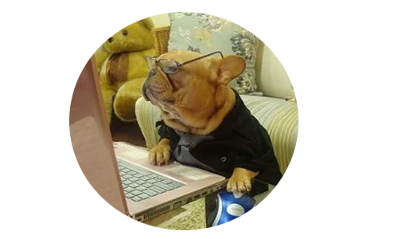

Keep in mind that feeding guidelines are just a starting point and you’ll need to find your bulldog’s optimal food consumption by trial and error and by observing his body weight. General guidelines suggest: 20-70 calories per pound of body weight, depending on a dog’s activity level but since bulldogs are quite sedentary and extremely vulnerable to obesity, your dog will most likely require less than what’s recommended. Monitor your dog’s weight and activity level and make necessary adjustments as needed.Your new puppy will need to eat 2-3 times per day but do not leave his food out for him because this usually results in overeating and every extra pound of body weight puts 50 lbs. of pressure on his developing joints, muscles and bones. Like humans, dogs are not conditioned to eat the same food at the same time every day. Dr. Mogens Eliasen has been teaching veterinarians & dog trainers for over 30 years and recommends switching up your puppy’s eating habits by varying his schedule and diet. His research has shown that when the type of food and eating time keeps changing, the dog becomes healthier in many unexpected ways.
*All information obtained from Wikipedia.*
